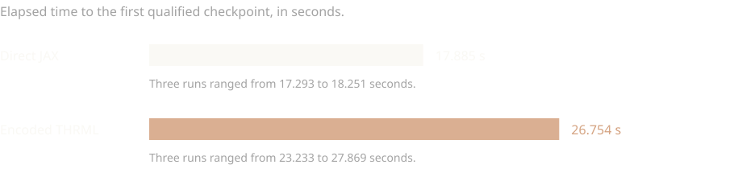

Measured timing
The direct sampler is faster on the small case.
We began with a four-state target so that both methods could be checked against a known answer.

All six runs passed at 512 observations per chain, which gives us a common accuracy checkpoint.
At that checkpoint, the encoded route took about 1.50 times as long, so direct sampling won this comparison.